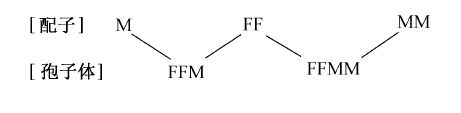

藓类的性别决定
在上述显花植物性染色体被发现的几年以前，两位Marchals证明：在雌雄异体的藓类植物里（配子体分雌雄两种（注：苔藓和蕨类的单倍体世代（或称配子体世代）分为雌雄两种，其二倍体（或称孢子体）世代无雌雄之别，或者说是中性。显花植物本身相当于藓类的孢子体。其配子体世代好像是深藏在雌蕊和雄蕊里面。所以雌雄二词，用于藓类方面，则指单倍体世代而言，用于显花植物方面则指二倍体世代而言。两者的意义互相矛盾。但是这个矛盾不是二倍体和单倍体问题（因为甚至在某些动物如蜜蜂、轮虫等的同一世代里，也碰到这个矛盾），而是有性世代和无性世代同用了雌雄这两个词。不过，有了这样的理解，以后采用这种习惯用法就不会发生严重困难了。）），由同一孢子母细胞所产生的四粒孢子中，有两粒发育成雌配子体，另两粒发育成雄配子体。
稍后，Allen在亲缘关系相近的苔类植物里，（图124）发现了单倍体的雌原叶体（配子体）有八条染色体，其中最长的一条为X；单倍体的雄原叶体（配子体）也有八条染色体，其中最短的一条为Y（图124b′）。这样，每个卵子有一条X，每条精子也有一条Y。由受精卵发育而成的孢子体，有16体染色体（包括X和Y各一条）。减数分裂发生在孢子形成的过程里，X和Y分开。半数的单倍型孢子各有一条X，以后发育成雌原叶体，另一半各有一条Y，以后发育成雄原叶体。
最近，Wettstein用雌雄异株的藓类植物进行若干精密实验，作出了进一步的分析。他袭用Marchals所发现的一种方法，造成了具备雌雄两群染色体的配子体（图125左侧）。例如，他仿照Marchals的方法，截取一段载有孢子的柄部（细胞为二倍型）。由该段发育而成的配子体也是二倍体。这样获得了雌雄兼备（FM）（注：F代表雌性，M代表雄性。——译者注。）的配子体。
Wettstein用另一种方法造成二倍体的雌藓和雄藓，成为双重雌性（FF）或双重雄性（MM）。方法如下：Wettstein用水合氯醛和其他药剂处理原丝体，使一个个别细胞的胞质，在染色体分裂以后，受到抑制。这样，他就能够在这些雌雄异株的植物里造出二倍型的巨大细胞，各有二重的雌性要素或雄性要素，例如染色体。从这样的二倍型细胞，又造成了几种新组合：其中有些是三倍体，有些是四倍体。图125右侧表示最有趣的几种组合。
雌原丝体的一个二倍型细胞发育成二倍体植株（FF），后者又产生二倍型卵细胞。一个二倍型雄原丝体的细胞也同样发育成MM植株。一个FF卵子同一条MM精子相遇，结果产生了一株四倍型孢子体（FFMM）。

图124 a.苔类的雌原叶体；b.雄原叶体，a′.雌性有一条大的X染色体；b′.雄性有一条小的Y染色体（仿Allen）

图125 示藓类二倍体和三倍体的各种不同组合（仿Wettstein）
一个FF胚珠同一条正常雄精子（M）受精，结果产生了三倍型植株（FFM），如下表：

从FFM或FFMM的孢子体又能够再生出配子体。这些配子体都能够发生雌雄两种要素，也都能够产生卵子和精细胞；不过雌性器官（颈卵器）和雄性器官（精子器）的多少及其出现的迟早，则表现出特殊的差别。
上面谈到两位Marchals，在Wettstein所用的同一物种里，得到了二倍型的FM配子体，并且证明了该配子体产生雌雄两性的器官。Wettstein证实了这个事实，并且报道雄性器官发生在雌性器官之前。
比较一下FM、FFM、FFMM三型，是有意义的。FM植物的雄性器官成熟极早。开始时精子器比颈卵器多多了。颈卵器发生较晚。
像Wettstein所说的，FFMM植物雄性器官的早熟性，比FM型植物的要强两倍。开始时只出现精子器。在这一年很晚的时候，衰老的精子器已经凋落，这时才有少数颈卵器出现；有一些植株根本不发生颈卵器。更晚一些，雌性器官才开始发育旺盛。
三倍型植物中，雌性器官首先成熟。至少是当四倍体只有雄性器官的时候（七月间），三倍体还只有雌性器官，以后（九月间）才具备雌雄两种器官。
有趣的是：这些实验表示了原来是雌雄异体的植物，经过雌雄两种要素的联合，可以成为人工的雌雄同体的植物。这些结果也表示了性器官发生的先后，决定于植物的年龄。更重要的是，两种性器官发生时间上的关系，由于遗传组合循相反方向改变而颠倒起来。